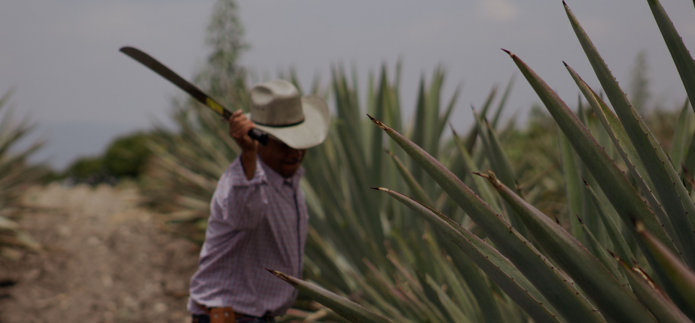
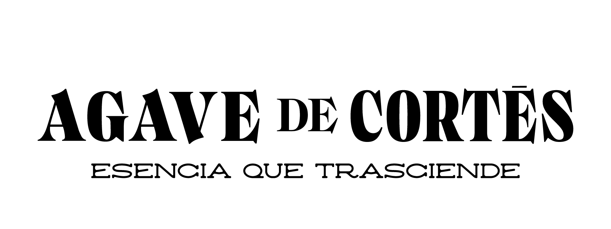
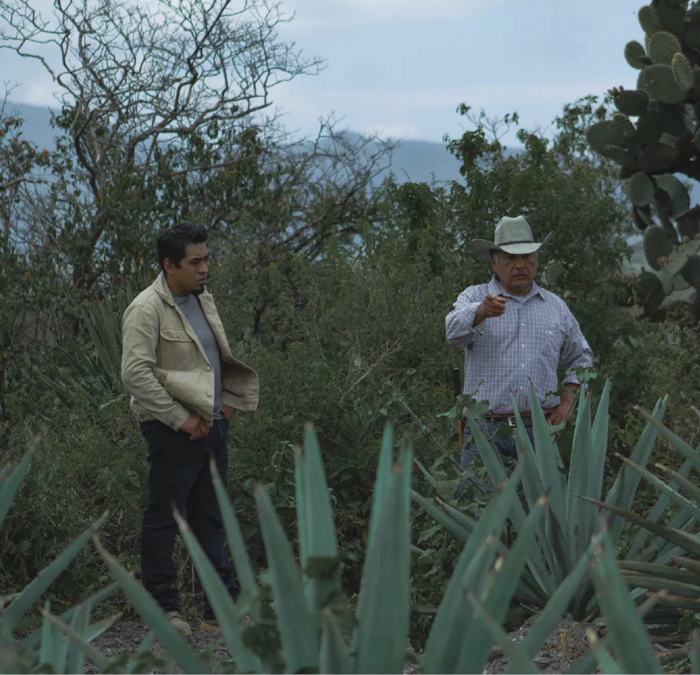
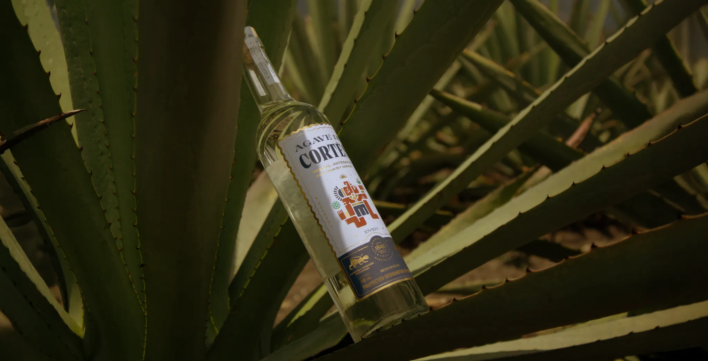
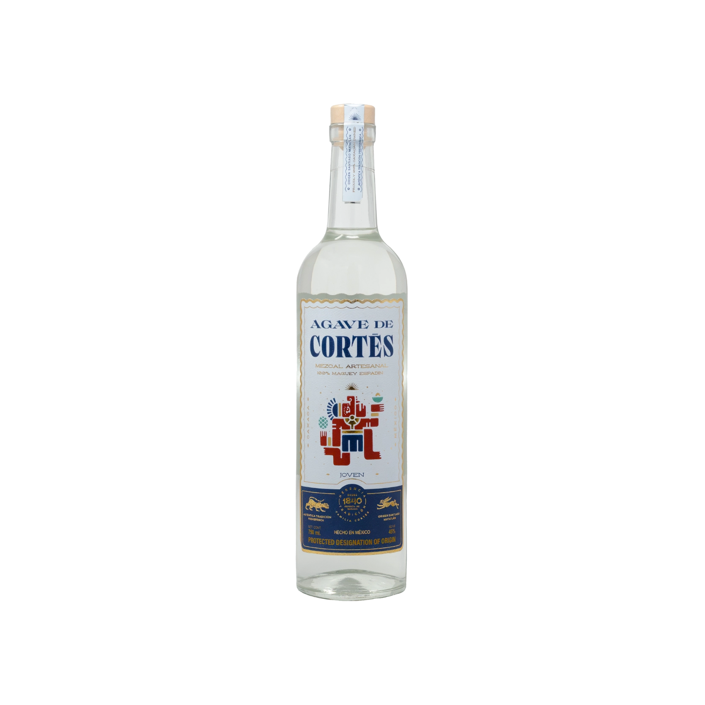
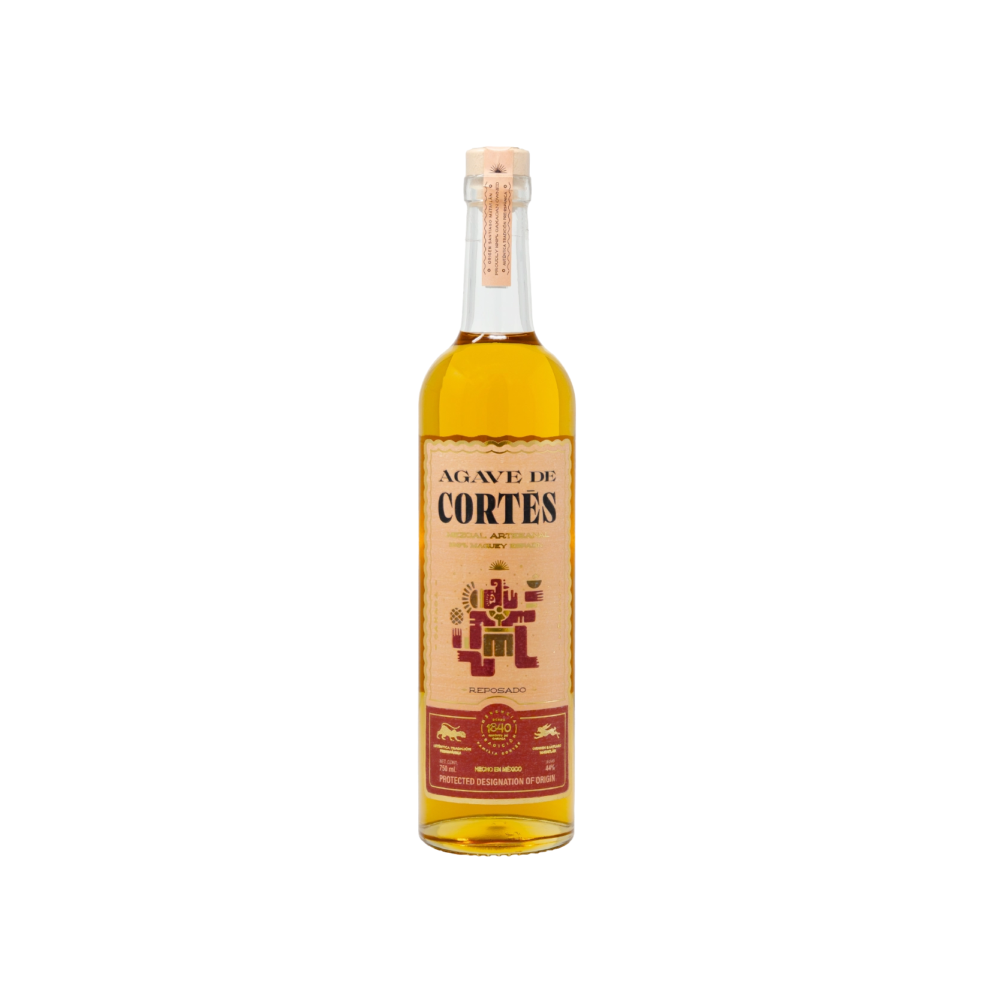
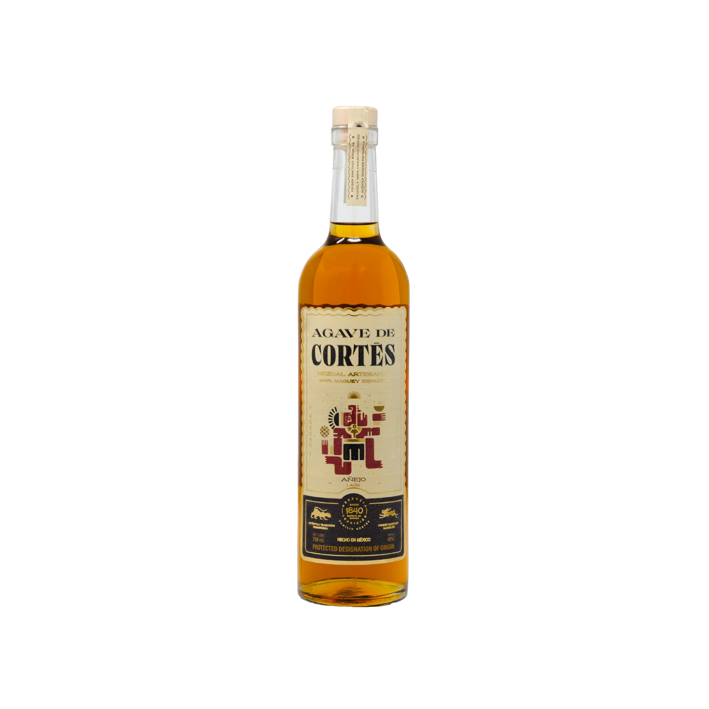
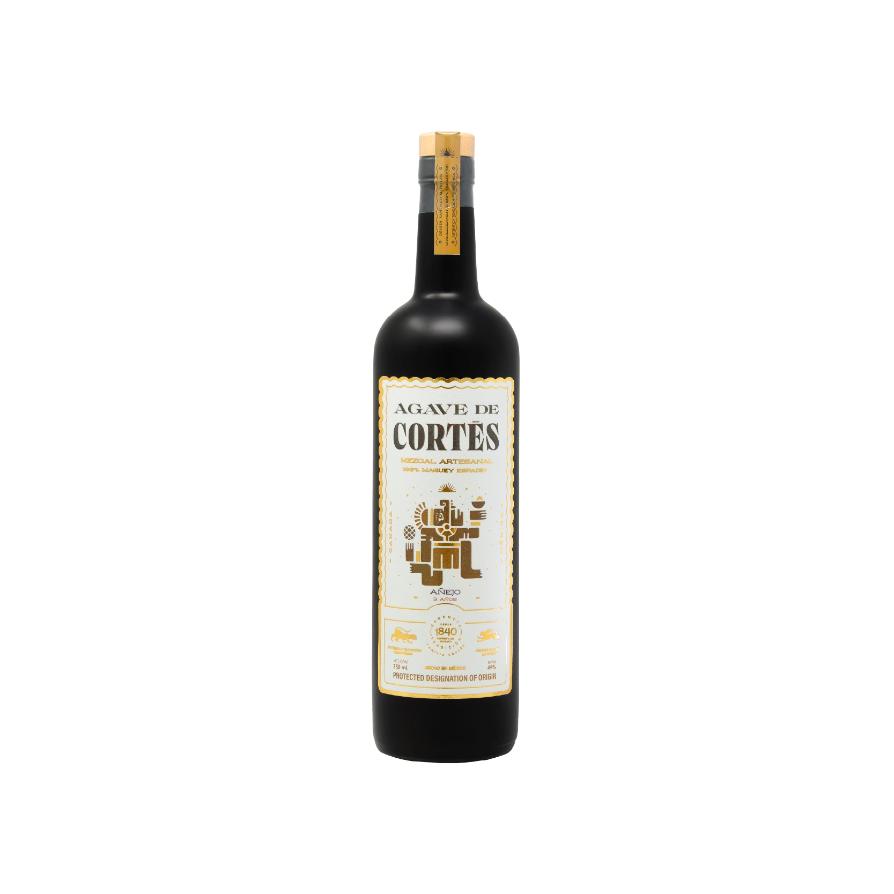

↓
FORJADO A LO LARGO DE SEIS GENERACIONES,
AGAVE DE CORTÉS PRESERVA LA ESENCIA DEL
MEZCAL OAXAQUEÑO.

Nuestro origen
Desde 2008, Agave de Cortés da vida a una tradición nacida de una profunda herencia familiar.
Como familia Cortés, hemos perfeccionado el arte de trabajar con distintas especies de agave, con un enfoque especial en el Maguey Espadín.
Cada botella refleja nuestro compromiso con la autenticidad, el origen y el legado mezcalero de Oaxaca.
Descubrir más ↗
Nuestros mezcales
Cada expresión de Agave de Cortés refleja el equilibrio entre tradición, conocimiento y tiempo. Elaborados con respeto por el proceso artesanal, nuestros mezcales revelan la personalidad del agave en cada una de sus distintas expresiones.
Joven
La expresión más pura del agave
La expresión más auténtica de Agave de Cortés. Elaborado con Maguey Espadín y siguiendo un proceso artesanal transmitido por generaciones, este mezcal conserva la frescura y el carácter natural del agave, ofreciendo una experiencia equilibrada y llena de identidad.
Comprar ↗
Agave de Cortés · JovenNotas de cata
Nuestro proceso
- Maguey semicultivado
- Horno subterráneo de piedra volcánica

Tahona- Tinas de madera al aire libre
- Doble destilación en alambique de cobre
Reposado
Equilibrio entre tiempo y tradición
Madurado cuidadosamente, envejece de 2 a 11 meses en barricas de roble americano, Agave de Cortés Reposado combina la esencia del mezcal artesanal con notas sutiles aportadas por la madera. Su perfil suave y armonioso refleja el equilibrio entre tradición y tiempo.
Comprar ↗
Agave de Cortés · ReposadoNotas de cata
Nuestro proceso
- Maguey semicultivado
- Horno subterráneo de piedra volcánica
- Tahona
- Tinas de madera al aire libre
- Doble destilación en alambique de cobre

Barricas de roble americano
Añejo - 1 año
Profundo y elegante
Tras 12 meses de maduración en barricas de roble americano, esta expresión desarrolla una mayor profundidad aromática y un perfil elegante que resalta la armonía entre el agave y la madera. El resultado es un mezcal suave y cremoso de un dorado intenso que te lleva a vivir una experiencia sensorial única.
Comprar ↗
Agave de Cortés · Añejo - 1 añoNotas de cata
Nuestro proceso
- Maguey semicultivado
- Horno subterráneo de piedra volcánica
- Tahona
- Tinas de madera al aire libre
- Doble destilación en alambique de cobre
- Barricas de roble americano
Añejo - 3 años
Complejo y sofisticado
El tiempo transforma esta expresión en un mezcal de gran riqueza y sofisticación. Después de tres años en barrica, ofrece un perfil complejo y refinado que resalta la dedicación, el oficio y la paciencia que distinguen a Agave de Cortés.
Comprar ↗
Agave de Cortés · Añejo - 3 añosNotas de cata
Nuestro proceso
- Maguey semicultivado
- Horno subterráneo de piedra volcánica
- Tahona
- Tinas de madera al aire libre
- Doble destilación en alambique de cobre
- Barricas de roble francés